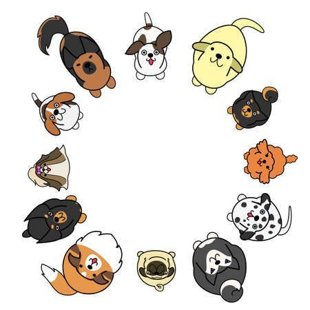

FurFect Match presents a mix of virtual pet care and real-world situations. Users will, therefore, be able to adopt and nurture a virtual pet of their choice and get points as a reward as their pet levels up. These points will go on to convert into donations for partner animal shelters, which are meant to support real animals in need from these shelters. The web application also makes it easier for users to learn more about taking care of that one pet and deliberate on the real-life adoption of various pets from shelters.
